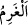
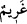

demektir. “düşkünlere (miskinlere)” Miskîn ise hiçbir şeyi olmayan kimsedir. Bu görüş,
Ebû Hanîfe’den rivayet edilmiştir. Bâzı âlimler ise bunun tam tersini (yani elinde hiçbir
malı olmayana “fakîr”, nisab miktarından az mala sahip olana ise “miskin” dendiğini)
söylemiştir. Bu konudaki ihtilafın neticesi, vasiyetin fakire mi yoksa miskine mi
yapılacağı hususunda kendisini gösterir.
“Onlar üzerinde çalışanlara (âmillere)” Âmil, zekat toplayan, onu tahsil eden
memurdur. Zekat toplayan kişiye elinde bulunan zekat malından, yaptığı iş miktarı kadar
ücret verilir. Kendisinin fakir, zengin ya da Hâşimî (Hz. Peygamberin soyundan) olması
farketmez. Âmil, topladığı zekatı zâyî ederse kendisine hiçbir şey verilmez. Aynı
şekilde mal sahibi zekâtını (âmile değil de) devlet reisine verse âmil ondan hiçbir hak
talep edemez. et-Tebyîn adlı eserde kaydedildiğine göre eğer (âmile verilecek ücret)
topladığı zekatın tamamına ulaşıyorsa, (topladığı zekatın) yarısından fazlası kendisine
verilmez. Çünkü bu durumda ikiye taksim etmek (ve yarısını ona vermek) en âdil yoldur.
“Kalbleri İslâm’a ısındırılacak olanlar”, bunlar, Araplardan özel bir topluluktur.
Onlar kuvvetli ve çok sayıda tâbileri olan bir gruptu. Müslüman olanları da vardı, kâfir
olanları da. (Müslüman olanları) İslâm üzere sebat etmeleri, (müslüman olmayanları)
İslâm’a teşvik için ya da şerlerinden korkulduğu için onlara zekat verilmişti.
“Kölelere” yani köleleri kölelikten kurtarmak maksadıyla sarfetmek için, demektir.
Bu da, mükâteb (hürriyetini almak için sahibi ile belirli bir meblağ ödemek üzere
sözleşme yapan) kölelere hürriyetlerinin bedelini ödemek üzere zekattan yardım etmek
suretiyle olur. Yoksa normal kölelere zekât verilmez. Çünkü mükâteb bir köle mala
müstehak ve mâlik değildir. Bilakis ona sâhibi malik olur. Aynı şekilde borçlunun
malına, borç veren (alacaklı) mâlik olur.
Zekat verileceklerden son dört sınıfa zekat bizzat kendi şahıslarından dolayı, yâni
mükâteb köle, borçlu, mücâhid ve müsafir konumlarında oldukları için verilir. Bu dört
sınıf, ilk dört sınıfta olduğu gibi kendilerine verilen zekatta diledikleri şekilde tasarrufta
bulunamazlar. Verilen zekat ancak köleyi köleliken kurtarmak, hak sâhibi olan kimseyi
sorumluluktan kurtarmak, mücâhide cihad yapabilmek, yolcuya da gideceği yolu
katedebilmek için ihtiyaç duyduğu şeyleri karşılamak için verilmektedir.
Âyette geçen köleden maksat, başkasının mükâtebi durumunda olan köledir. Mükâteb
köle zengin ise ödemekten âciz kaldığı miktarı zekat malından karşılanır ve bu suretle
onun kölelik borcu ödenir.
“borçlulara,” günah olmayan hususlarda kendileri için borçlanan ve borçlarından
fazla olarak nisabları (malın zekatı gerektiren miktarı) bulunmayan kimselerdir.
“__WORD__” ve “__WORD__” (borçlu) kelimeleri, alacaklı için kullanılsa da bu âyette borçlu
kastedilmektedir.
İki türlü borçlu vardır:
Birincisi, günah olmayan konularda kendisi için borçlanan kişi. Böyle bir borçluya,
borcunu karşılayacak kadar zekat verilir. Ancak burada borçlunun borcunu karşılayacak
kadar malı olmaması şartı getirilmiştir. Şayet bu kadar malı var ise ona zekat verilmez.